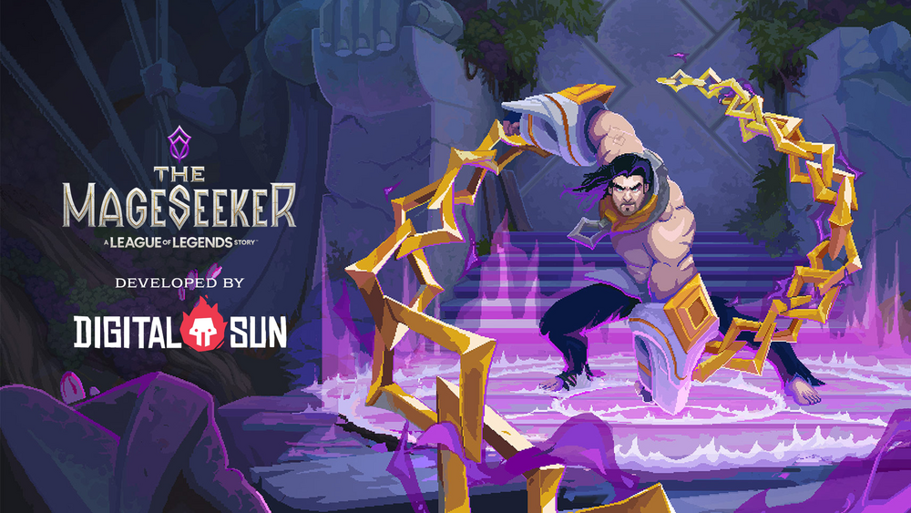
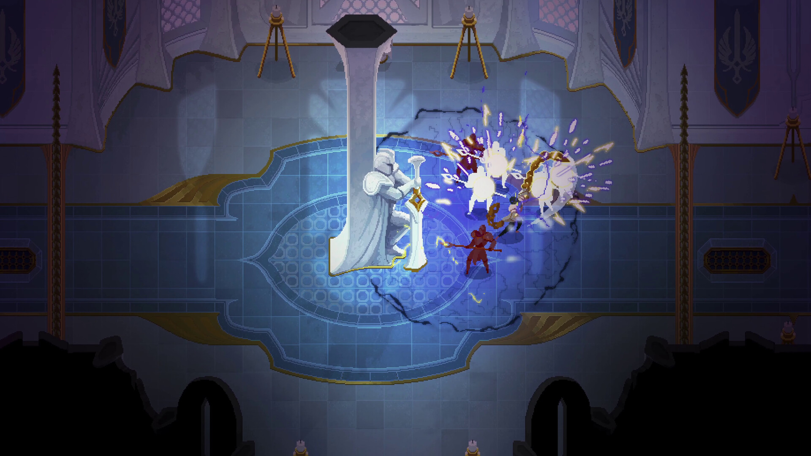
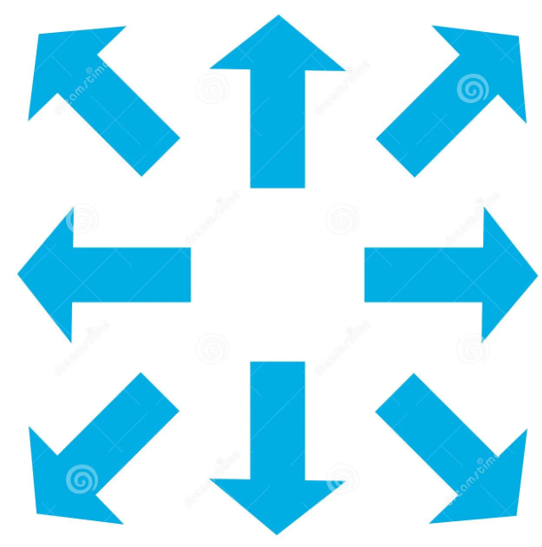
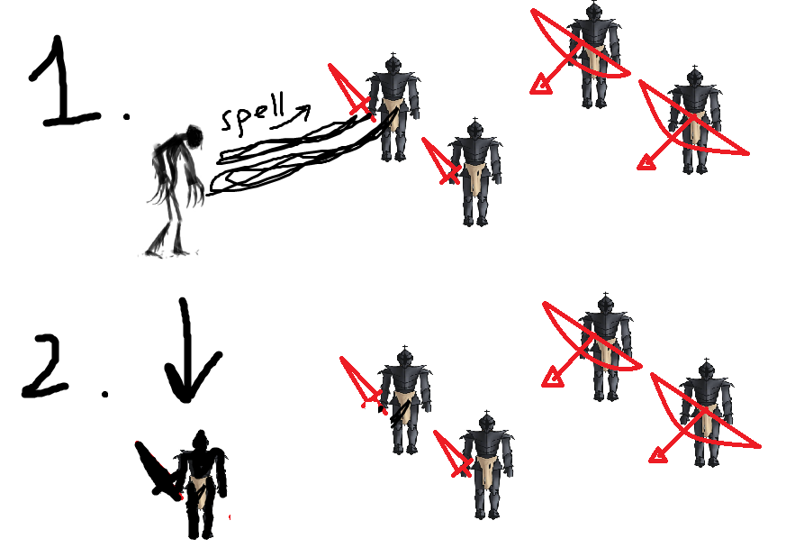

Дизайн-документ Pear Team Studio
Оглавление
- Дизайн-документ Pear Team Studio
- Оглавление
- Терминология
- Время койота
- Состояние покоя - Жанр и синопсис
- Клавиши управления
- Стиль игры (не доделано)
- Паттерны поведения ИИ
- Системы и механики
Терминология
Время койота
Это техника в разработке игр, при которой игрокам даются дополнительные доли секунды на совершение действия уже после его предполагаемого завершения с целью дать игроку ощущение, что он успел сделать его в самый последний момент. Чаще всего это используют в платформерах при прыжках с платформ - персонаж уже не стоит на платформе и с секунды на секунду начнёт падать, но у него всё ещё есть возможность совершить прыжок.
Состояние покоя
Это состояние персонажа, когда он не совершает какие-либо действия. Обычно в этот момент проигрывается анимация покоя.
Жанр и синопсис
Жанр игры --- линейное 2D action RPG с видом сверху.
Синопсис
Действия происходят во время средневековья в огромном королевстве. Не так давно люди открыли для себя чудеса магии и в данный момент активно изучают её. Развитие механических технологий замедляется.
После долгой войны между церковниками и королём-тираном установилось правление церкви. Жизнь в королевстве налаживается. Исчез многолетний голод и снизилось число преступлений. Увеличивается армия и готовится поход на соседнее королевство с целью вернуть утраченные земли.
Воодушевлённые люди не хотят замечать слухи о бесследной пропаже людей и появлении странной чёрной магии.
Главный герой - поверженный король, труп которого бесследно исчез сразу после битвы. Чёрная магия помогла королю спастись. Он превратился в монстра, который вынужден постоянно совершать зло, чтобы подпитывать в себе жизнь. Поможет ему в этом способность копировать облик и поведение своих жертв.
Игроку предстоит узнать о прошлом главного героя из найденных на уровнях записок с историей про некого загадочного персонажа.
Спустя много лет подготовки он отправляется в кровавый поход с целью вернуть трон. Первым препятствием на его пути становится небольшая деревня. Пришедший монстр сеет ужас среди крестьян, поэтому небольшому отряду рыцарей приходится взяться за оружие. С этого момента начинается игра.
Вырезав деревню, король отправляется в город. Там заранее узнали о приближающейся угрозе, поэтому хорошо подготовились. На улицах полно стражи, а ворота в квартал учёных закрыты. Чтобы их открыть, придётся уничтожить особый магический дух, вселяющийся в своих защитников и пользующийся ими как живым щитом.
После мясорубки в городе, король прибывает в квартал учёных. Здешние исследователи магии и технологий уже готовы к бою. Они активируют магическую машину, которая подобно главному герою изменяет себя для эффективного уничтожения цели. Чтобы выжить, игроку приходится использовать облики нападающих противников, а чтобы победить - атаковать машину в моменты её перегрузки.
Магическая машина уничтожена. Главный герой ломает ворота в королевский квартал. Там его уже поджидают элитные воины церкви. Король пробирается в дворец. У трона он встречает главу церкви, лишившего его жизни. Тот понимает, что ему не одолеть монстра, если это не смоли сделать его лучшие воины, поэтому он обращается к чёрной магии. Появляются 2 похожих на нашего главного героя монстра. Они эффективно меняют облики и поведение, чтобы защищаться и атаковать. Начинается жестокая финальная схватка.
Король убивает монстров, а также главу церкви. Он садится на трон и игра заканчивается. Королевство вновь погружается в тёмные времена.
Похожие игры:
- Mageseeker: a league of legends story

 - Children of Morta (2019) (Не смотрел, что за игра)
- Omensight (2018) (Не смотрел, что за игра)
Клавиши управления
| Название клавиши действия | Сокращение | Клавиша на клавиатуре и мыши | Клавиша на джойстике |
|---|---|---|---|
| Клавиша движения вверх | Кл.вверх // Кл.движения | W | |
| Клавиша движения вниз | Кл.вниз // Кл.движения | S | |
| Клавиша движения вправо | Кл.вправо // Кл.движения | D | |
| Клавиша движения влево | Кл.влево // Кл.движения | A | |
| Клавиша атаки | Кл.атаки | Левая кнопка мыши | |
| Клавиша скопировать облик | Кл.облик | Правая кнопка мыши | |
| Клавиша действия | Кл.Д. | F | |
| Клавиша рывка/бега | Кл.Рыв | Shift | |
| Клавиша спецприёма | Кл.Спец | Space | |
| Клавиша использовать расходник 1 | Кл.1 | 1 | |
| Клавиша использовать расходник 2 | Кл.2 | 2 | |
| Клавиша использовать расходник 3 | Кл.3 | 3 | |
| Клавиша паузы/меню | Кл.Пауза | Esc |
Стиль игры (не доделано)
Паттерны поведения ИИ
Нападение
.png)
Персонаж начинает действовать, когда игрок попадает в его зону видимости.
Персонаж движется в зону, где он способен атаковать цель. (зона атаки)
Далее он атакует, эффективно пользуясь своими способностями. (У каждого персонажа свои способности, поэтому как они будут их использовать, прописано отдельно)
Если игрок вышел из зоны атаки, то персонаж временно прекращает наносить удары и продолжает двигаться в зону атаки.
Если цель повержена, то персонаж выбирает другую цель. В случае если подходящей цели нет, то он переходит в состояние покоя.
Системы и механики
Система передвижения
Все персонажи в игре, включая персонажей под управлением игрока, перемещаются в 8 направлениях движения (см. картинку)

При начале движения у персонажа запускается анимация перемещения, и он разворачивается в нужную сторону:
Во всех правых направлениях - персонаж разворачивается в правую сторону, во всех левых - в левую. При движении в направлениях "вверх" и "вниз" персонаж смотрит в сторону последнего направления движения.
У каждого персонажа своя скорость, за которую отвечает отдельный параметр.
При прекращении перемещения запускается анимация покоя, с сохранением направления взгляда персонажа.
Игрок может взаимодействовать с системой передвижения своего персонажа путём нажатия на клавиши движения в соответствующих направлениях: например, сочетание клавиш кл.вправо + кл.вверх заставляет персонажа двигаться в правый верхний угол, а кл.вниз - ровно вниз.
Кратко про главную механику игры. (не доделано)
Персонаж игрока обладает способностью перевоплатится в любого врага, находящегося в зоне доступности. Таким образом, если в зоне доступности находятся гигант, рыцарь и лучник, то игрок может принять облик любого из них, сохранив все способности выбранного противника.

К каждому противнику нужен свой подход. Например, рыцарь эффективен против лучников, лучники - против гигантов, гиганты - против рыцарей. Таким образом, игрок будет играть более эффективно, если будет регулярно пользоваться способностью к перевоплащению.
За убийство противников, игрок востанавливает небольшое количество очков здоровья. Это побуждает игрока более эффективно убивать врагов (для быстрого востановления здоровья).
Каждое перевоплащение отнимает у игрока очки здоровья. Это побуждает его разумнее относится к выбору необходимого облика. (Это под вопросом. см. комментарий)
Боевая система игрока (не доделано)
Рыцарь церкви (Не доделано)
Описание:
Проворный и очень быстрый воин ближнего боя, составляющий бо́льшую часть церковной армии. Экипирован в среднюю броню, которая хорошо защищает носителя от стрел. Владеет лёгким и длинным мечом, способным наносить значительный урон целям с лёгкой бронёй. Обладает способностью делать рывок, а также наносить несколько ударов подряд.
Особо эффективен против лучников и магов.
Механики:
--- Комбо-атака
Рыцарь может наносить до 3-х быстрых размашистых ударов подряд, каждый из которых немного подталкивает его по направлению к цели.
- Комбо начинается с нажатия на кл.атаки;
- Запускается анимация атаки, появляется запрет на управление персонажем и регистрируется нанесённый по противнику удар;
- После регистрации удара и проигрывания основной части анимации снимается запрет на управление персонажем;
- Далее есть 2 варианта событий:
4.1. Подождать завершения анимации и окончание времени койота. Тогда комбо-атака прекратится и персонаж перейдёт в состояние покоя.
4.2. Совершить любое действие. Таким образом можно прервать комбо-атаку, например, если нажать на кл.движения. Или продолжить комбо-атаку, нажав на кл.атаки, совершив следующий удар (переход на шаг 1). Если сделано уже 3 удара, то 4-й сделать нельзя, но всё ещё можно совершить другое действие.

--- Рывок